Preview of tidybayes plots
tidybayes is an R package that aims to make it easy to integrate popular Bayesian modeling methods into a tidy data + ggplot workflow.
Tidy data frames (one observation per row) are particularly convenient for use in a variety of R data manipulation and visualization packages. However, when using Bayesian modeling functions like JAGS or Stan in R, we often have to translate this data into a form the model understands, and then after running the model, translate the resulting sample (or predictions) into a more tidy format for use with other R functions. tidybayes aims to simplify these two common (often tedious) operations:
Composing data for use with the model. This often means translating data from a
data.frameinto alist, making surefactorsare encoded as numerical data, adding variables to store the length of indices, etc. This package helps automate these operations using thecompose_datafunction, which automatically handles data types likenumeric,logical,factor, andordinal, and allows easy extensions for converting other datatypes into a format the model understands by providing your own implementation of the genericas_data_list.Extracting tidy draws from the model. This often means extracting indices from parameters with names like
"b[1,1]","b[1,2]"into separate columns of a data frame, likei = c(1,1,..)andj = c(1,2,...). More tediously, sometimes these indices actually correspond to levels of a factor in the original data; e.g."x[1]"might correspond to a value ofxfor the first level of some factor. We provide several straightforward ways to convert draws from a variable with indices into useful long-format (“tidy”) data frames, with automatic back-conversion of common data types (factors, logicals) using thespread_drawsandgather_drawsfunctions, including automatic recovery of factor levels corresponding to variable indices. In most cases this kind of long-format data is much easier to use with other data-manipulation and plotting packages (e.g.,dplyr,tidyr,ggplot2) than the format provided by default from the model.
tidybayes also provides some additional functionality for data manipulation and visualization tasks common to many models:
Extracting tidy fits and predictions from models. For models like those provided by
rstanarmandbrms,tidybayesprovides a tidy analog of thefittedandpredictfunctions, calledadd_fitted_drawsandadd_predicted_draws. These functions are modeled after themodelr::add_predictionsfunction, and turn a grid of predictions into a long-format data frame of draws from either the fits or predictions from a model. These functions make it straightforward to generate arbitrary fit lines from a model.Summarizing posterior distributions from models. The
point_intervalfamily of functions (median_qi,mean_qi,mode_hdi, etc) are methods for generating point summaries and intervals that are designed with tidy workflows in mind. They can generate point summaries plus an arbitrary number of probability intervals from tidy data frames of draws, they return tidy data frames, and they respect data frame groups.Visualizing posteriors. The focus on tidy data makes the output from tidybayes easy to visualize using
ggplot. Existinggeoms (likegeom_pointrangeandgeom_linerange) can give useful output, buttidybayesalso includes several geoms to simplify common combinations ofstatsandgeomswith sensible defaults suitable for visualizing posterior point summaries and intervals (geom_pointinterval,geom_pointintervalh,stat_pointinterval,stat_pointintervalh), visualizing densities with point summaries and intervals (“eye plots”,geom_eyeandgeom_eyeh; or “half-eye plots”,geom_halfeyeh), and visualizing fit lines with an arbitrary number of uncertainty bands (geom_lineribbonandstat_lineribbon). Combining the base-Rquantilefunction withgeom_dotplotalso facilitates the construction of quantile dotplots of posteriors (see example in this document).Comparing a variable across levels of a factor, which often means first generating pairs of levels of a factor (according to some desired set of comparisons) and then computing a function over the value of the comparison variable for those pairs of levels. Assuming your data is in the format returned by
spread_draws, thecompare_levelsfunction allows comparison across levels to be made easily.
Finally, tidybayes aims to fit into common workflows through compatibility with other packages:
Drop-in functions to translate tidy column names used by
tidybayesto/from names used by other common packages and functions, including column names used byggmcmc::ggs(viato_ggmcmc_namesandfrom_ggmcmc_names) and column names used bybroom::tidy(viato_broom_namesandfrom_broom_names), which makes comparison with results of other models straightforward.The
unspread_drawsandungather_drawsfunctions invertspread_drawsandgather_draws, aiding compatibility with other Bayesian plotting packages (notablybayesplot).The
gather_emmeans_drawsfunction turns the output fromemmeans::emmeans(formerlylsmeans) into long-format data frames (when applied to supported model types, likeMCMCglmmandrstanarmmodels).
Supported model types
tidybayes aims to support a variety of models with a uniform interface. Currently supported models include rstan, brms, rstanarm, runjags, rjags, jagsUI, coda::mcmc and coda::mcmc.list, MCMCglmm, and anything with its own as.mcmc.list implementation. If you install the tidybayes.rethinking package, models from the rethinking package are also supported.
Installation
You can install the currently-released version from CRAN with this R command:
Alternatively, you can install the latest development version from GitHub with these R commands:
Examples
This example shows the use of tidybayes with the Stan modeling language; however, tidybayes supports many other model types, such as JAGS, brm, rstanarm, and (theoretically) any model type supported by coda::as.mcmc.list.
library(magrittr)
library(dplyr)
library(ggplot2)
library(ggstance)
library(rstan)
library(tidybayes)
library(emmeans)
library(broom)
library(brms)
library(modelr)
library(forcats)
library(cowplot)
library(RColorBrewer)
library(gganimate)
theme_set(theme_tidybayes() + panel_border() + background_grid())Imagine this dataset:
set.seed(5)
n = 10
n_condition = 5
ABC =
tibble(
condition = rep(c("A","B","C","D","E"), n),
response = rnorm(n * 5, c(0,1,2,1,-1), 0.5)
)
ABC %>%
ggplot(aes(x = response, y = condition)) +
geom_point(alpha = 0.5) +
ylab("condition")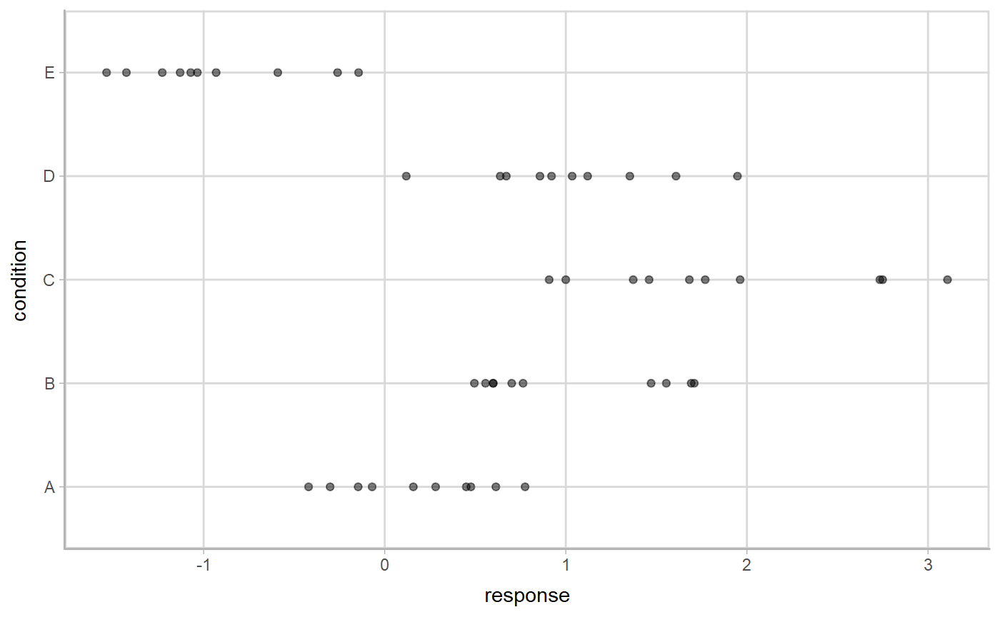
A hierarchical model of this data might fit an overall mean across the conditions (overall_mean), the standard deviation of the condition means (condition_mean_sd), the mean within each condition (condition_mean[condition]) and the standard deviation of the responses given a condition mean (response_sd):
data {
int<lower=1> n;
int<lower=1> n_condition;
int<lower=1, upper=n_condition> condition[n];
real response[n];
}
parameters {
real overall_mean;
vector[n_condition] condition_zoffset;
real<lower=0> response_sd;
real<lower=0> condition_mean_sd;
}
transformed parameters {
vector[n_condition] condition_mean;
condition_mean = overall_mean + condition_zoffset * condition_mean_sd;
}
model {
response_sd ~ cauchy(0, 1); // => half-cauchy(0, 1)
condition_mean_sd ~ cauchy(0, 1); // => half-cauchy(0, 1)
overall_mean ~ normal(0, 5);
condition_zoffset ~ normal(0, 1); // => condition_mean ~ normal(overall_mean, condition_mean_sd)
for (i in 1:n) {
response[i] ~ normal(condition_mean[condition[i]], response_sd);
}
}
Composing data for input to model: compose_data
We have compiled and loaded this model into the variable ABC_stan. Rather than munge the data into a format Stan likes ourselves, we will use the tidybayes::compose_data function, which takes our ABC data frame and automatically generates a list of the following elements:
-
n: number of observations in the data frame -
n_condition: number of levels of the condition factor -
condition: a vector of integers indicating the condition of each observation -
response: a vector of observations
So we can skip right to modeling:
Getting tidy draws from the model: spread_draws
We decorate the fitted model using tidybayes::recover_types, which will ensure that numeric indices (like condition) are back-translated back into factors when we extract data:
Now we can extract variables of interest using spread_draws, which automatically parses indices, converts them back into their original format, and turns them into data frame columns. This function accepts a symbolic specification of Stan variables using the same syntax you would to index columns in Stan. For example, we can extract the condition means and the residual standard deviation:
m %>%
spread_draws(condition_mean[condition], response_sd) %>%
head(15) # just show the first few rows## # A tibble: 15 x 6
## # Groups: condition [5]
## .chain .iteration .draw condition condition_mean response_sd
## <int> <int> <int> <chr> <dbl> <dbl>
## 1 1 1 1 A 0.126 0.533
## 2 1 1 1 B 0.961 0.533
## 3 1 1 1 C 1.88 0.533
## 4 1 1 1 D 1.23 0.533
## 5 1 1 1 E -1.28 0.533
## 6 1 2 2 A 0.250 0.542
## 7 1 2 2 B 1.05 0.542
## 8 1 2 2 C 1.96 0.542
## 9 1 2 2 D 0.762 0.542
## 10 1 2 2 E -1.28 0.542
## 11 1 3 3 A 0.160 0.543
## 12 1 3 3 B 0.975 0.543
## 13 1 3 3 C 2.01 0.543
## 14 1 3 3 D 1.22 0.543
## 15 1 3 3 E -0.940 0.543The condition numbers are automatically turned back into text (“A”, “B”, “C”, …) and split into their own column. A long-format data frame is returned with a row for every draw \(\times\) every combination of indices across all variables given to spread_draws; for example, because response_sd here is not indexed by condition, within the same draw it has the same value for each row corresponding to a different condition (some other formats supported by tidybayes are discussed in vignette("tidybayes"); in particular, the format returned by gather_draws).
Plotting posteriors as eye plots: geom_eye / geom_eyeh
Automatic splitting of indices into columns makes it easy to plot the condition means here. We will employ the tidybayes::geom_eyeh geom (horizontal version of tidybayes::geom_eye), which combines a violin plot of the posterior density, median, 66% and 95% quantile interval to give an “eye plot” of the posterior. The point and interval types are customizable using the point_interval family of functions. A “half-eye” plot (non-mirrored density) is also available as tidybayes::geom_halfeyeh.
m %>%
spread_draws(condition_mean[condition]) %>%
ggplot(aes(x = condition_mean, y = condition)) +
geom_eyeh()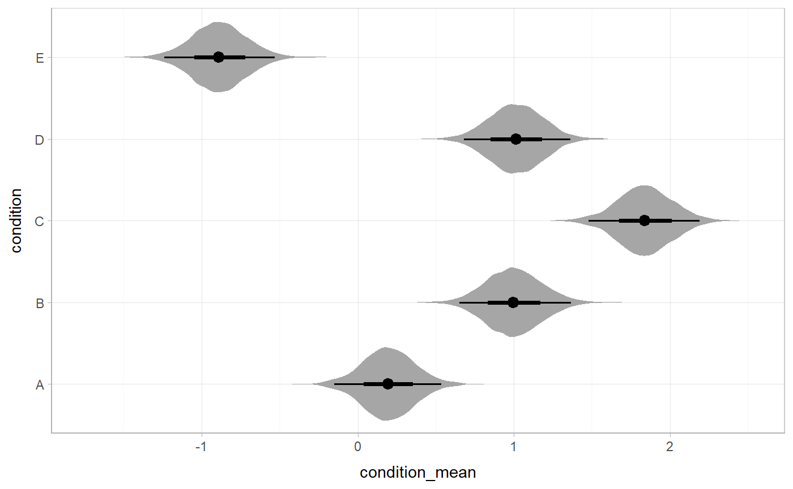
Or one can employ the similar “half-eye” plot:
m %>%
spread_draws(condition_mean[condition]) %>%
ggplot(aes(x = condition_mean, y = condition)) +
geom_halfeyeh()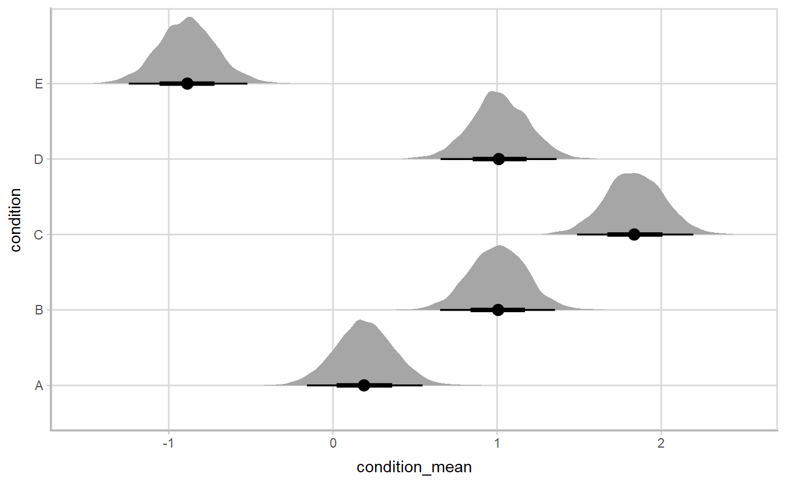
Plotting posteriors as quantile dotplots
Intervals are nice if the alpha level happens to line up with whatever decision you are trying to make, but getting a shape of the posterior is better (hence eye plots, above). On the other hand, making inferences from density plots is imprecise (estimating the area of one shape as a proportion of another is a hard perceptual task). Reasoning about probability in frequency formats is easier, motivating quantile dotplots, which also allow precise estimation of arbitrary intervals (down to the dot resolution of the plot, here 100):
m %>%
spread_draws(condition_mean[condition]) %>%
do(tibble(condition_mean = quantile(.$condition_mean, ppoints(100)))) %>%
ggplot(aes(x = condition_mean)) +
geom_dotplot(binwidth = .04) +
facet_grid(rows = vars(fct_rev(condition)), switch = "y") +
facet_title_left_horizontal() +
scale_y_continuous(breaks = NULL) +
ylab(NULL)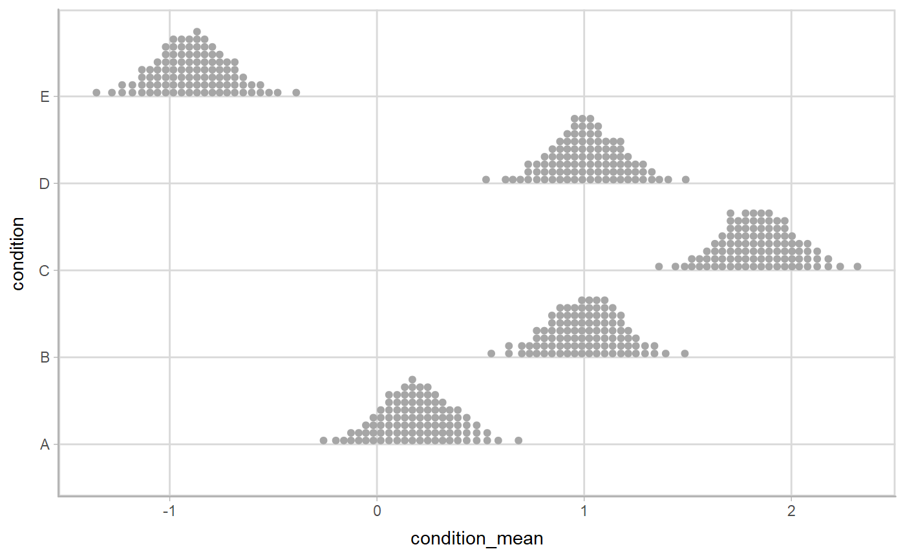
The idea is to get away from thinking about the posterior as indicating one canonical point or interval, but instead to represent it as (say) 100 approximately equally likely points.
Point and interval summaries
The functions tidybayes::median_qi, tidybayes::mean_qi, tidybayes::mode_hdi, etc (the point_interval functions) give tidy output of point summaries and intervals:
## # A tibble: 5 x 7
## condition condition_mean .lower .upper .width .point .interval
## <chr> <dbl> <dbl> <dbl> <dbl> <chr> <chr>
## 1 A 0.189 -0.158 0.546 0.95 median qi
## 2 B 1.01 0.653 1.35 0.95 median qi
## 3 C 1.84 1.49 2.20 0.95 median qi
## 4 D 1.01 0.656 1.36 0.95 median qi
## 5 E -0.887 -1.24 -0.521 0.95 median qi
Comparison to other models via compatibility with broom
Translation functions like tidybayes::to_broom_names, tidybayes::from_broom_names, tidybayes::to_ggmcmc_names, etc. can be used to translate between common tidy format data frames with different naming schemes. This makes it easy, for example, to compare points summaries and intervals between tidybayes output and models that are supported by broom::tidy.
For example, let’s compare against ordinary least squares (OLS) regression:
linear_results =
lm(response ~ condition, data = ABC) %>%
emmeans(~ condition) %>%
tidy() %>%
mutate(model = "OLS")
linear_results## # A tibble: 5 x 7
## condition estimate std.error df conf.low conf.high model
## <fct> <dbl> <dbl> <dbl> <dbl> <dbl> <chr>
## 1 A 0.182 0.173 45 -0.167 0.530 OLS
## 2 B 1.01 0.173 45 0.665 1.36 OLS
## 3 C 1.87 0.173 45 1.53 2.22 OLS
## 4 D 1.03 0.173 45 0.678 1.38 OLS
## 5 E -0.935 0.173 45 -1.28 -0.586 OLSUsing tidybayes::to_broom_names, we’ll convert the output from median_qi (which uses names .lower and .upper) to use names from broom (conf.low and conf.high) so that comparison with output from broom::tidy is easy:
bayes_results = m %>%
spread_draws(condition_mean[condition]) %>%
median_qi(estimate = condition_mean) %>%
to_broom_names() %>%
mutate(model = "Bayes")
bayes_results## # A tibble: 5 x 8
## condition estimate conf.low conf.high .width .point .interval model
## <chr> <dbl> <dbl> <dbl> <dbl> <chr> <chr> <chr>
## 1 A 0.189 -0.158 0.546 0.95 median qi Bayes
## 2 B 1.01 0.653 1.35 0.95 median qi Bayes
## 3 C 1.84 1.49 2.20 0.95 median qi Bayes
## 4 D 1.01 0.656 1.36 0.95 median qi Bayes
## 5 E -0.887 -1.24 -0.521 0.95 median qi BayesThis makes it easy to bind the two results together and plot them:
bind_rows(linear_results, bayes_results) %>%
ggplot(aes(y = condition, x = estimate, xmin = conf.low, xmax = conf.high, color = model)) +
geom_pointintervalh(position = position_dodgev(height = .3))## Warning in bind_rows_(x, .id): binding factor and character vector, coercing into
## character vector## Warning in bind_rows_(x, .id): binding character and factor vector, coercing into
## character vector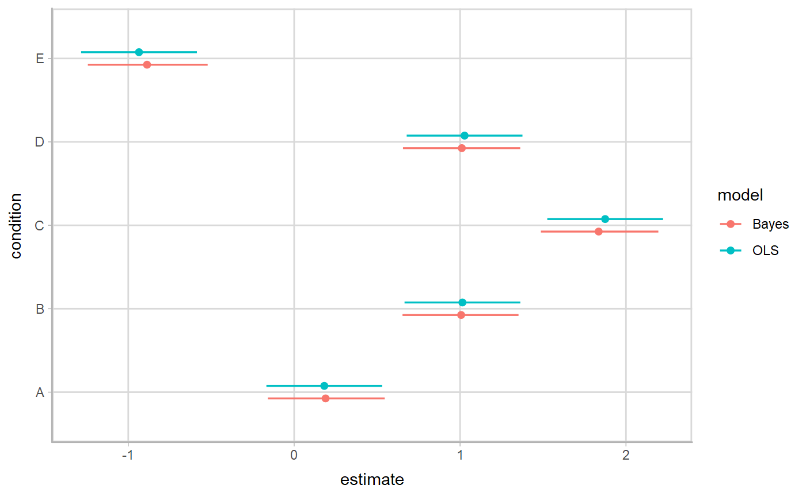
Shrinkage towards the overall mean is visible in the Bayesian results.
Compatibility with broom::tidy also gives compatibility with dotwhisker::dwplot:
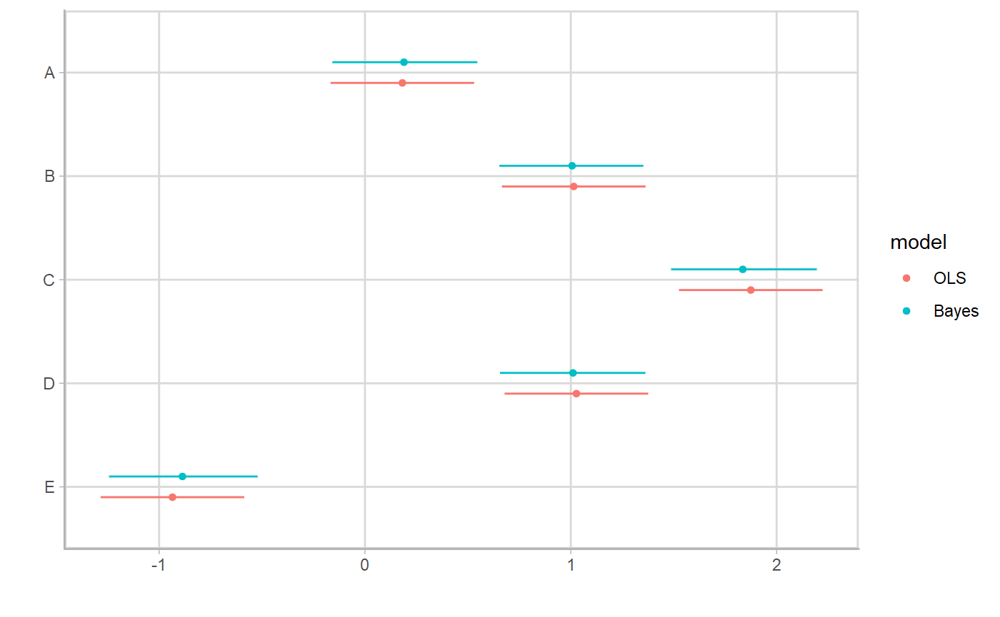
Posterior prediction and complex custom plots
The tidy data format returned by spread_draws also facilitates additional computation on variables followed by the construction of more complex custom plots. For example, we can generate posterior predictions easily, and use the .width argument (passed internally to median_qi) to generate any number of intervals from the posterior predictions, then plot them alongside point summaries and the data:
m %>%
spread_draws(condition_mean[condition], response_sd) %>%
mutate(prediction = rnorm(n(), condition_mean, response_sd)) %>%
ggplot(aes(y = condition)) +
# posterior predictive intervals
stat_intervalh(aes(x = prediction), .width = c(.5, .8, .95)) +
scale_color_brewer() +
# median and quantile intervals of condition mean
stat_pointintervalh(aes(x = condition_mean), .width = c(.66, .95), position = position_nudge(y = -0.2)) +
# data
geom_point(aes(x = response), data = ABC)## Warning: Ignoring unknown aesthetics: x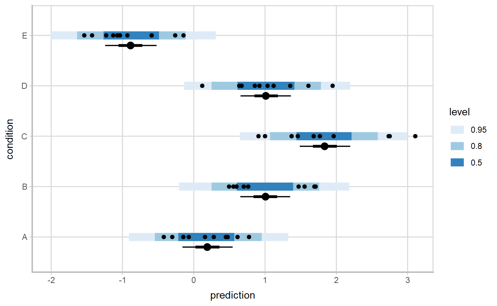
This plot shows 66% and 95% quantile credible intervals of posterior median for each condition (point + black line); 95%, 80%, and 50% posterior predictive intervals (blue); and the data.
Fit curves
For models that support it (like rstanarm and brms models), We can also use the add_fitted_draws or add_predicted_draws functions to generate posterior fits or predictions. Combined with the functions from the modelr package, this makes it easy to generate fit curves.
Let’s fit a slightly naive model to miles per gallon versus horsepower in the mtcars dataset:
Now we will use modelr::data_grid, tidybayes::add_predicted_draws, and tidybayes::stat_lineribbon to generate a fit curve with multiple probability bands:
mtcars %>%
data_grid(hp = seq_range(hp, n = 101)) %>%
add_predicted_draws(m_mpg) %>%
ggplot(aes(x = hp, y = mpg)) +
stat_lineribbon(aes(y = .prediction), .width = c(.99, .95, .8, .5), color = "#08519C") +
geom_point(data = mtcars, size = 2) +
scale_fill_brewer()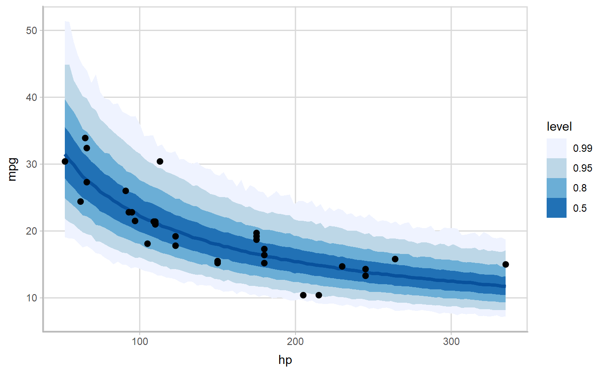
stat_lineribbon(aes(y = .prediction), .width = c(.99, .95, .8, .5)) is one of several shortcut geoms that simplify common combinations of tidybayes functions and ggplot geoms. It is roughly equivalent to the following:
stat_summary(
aes(y = .prediction, fill = forcats::fct_rev(ordered(stat(.width))), group = -stat(.width)),
geom = "ribbon", point_interval = median_qi, fun.args = list(.width = c(.99, .95, .8, .5))
) +
stat_summary(aes(y = .prediction), fun.y = median, geom = "line", color = "red", size = 1.25)Because this is all tidy data, if you wanted to build a model with interactions among different categorical variables (say a different curve for automatic and manual transmissions), you can easily generate predictions faceted over that variable (say, different curves for different transmission types). Then you could use the existing faceting features built in to ggplot to plot them.
Such a model might be:
Then we can generate and plot predictions as before (differences from above are highlighted as comments):
mtcars %>%
data_grid(hp = seq_range(hp, n = 101), am) %>% # add am to the prediction grid
add_predicted_draws(m_mpg_am) %>%
ggplot(aes(x = hp, y = mpg)) +
stat_lineribbon(aes(y = .prediction), .width = c(.99, .95, .8, .5), color = "#08519C") +
geom_point(data = mtcars) +
scale_fill_brewer() +
facet_wrap(~ am) # facet by am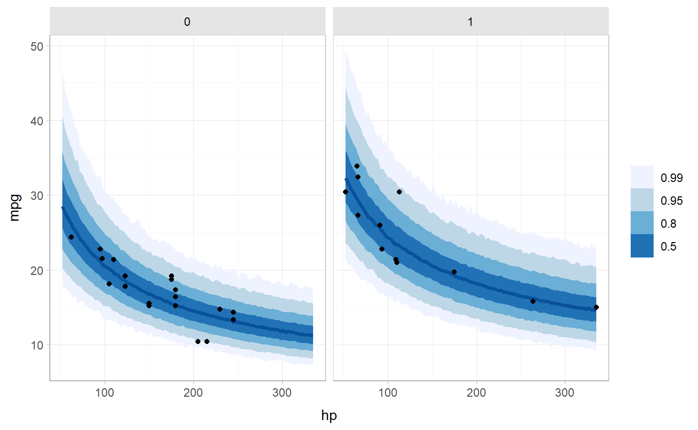
Or, if you would like overplotted posterior fit lines, you can instead use tidybayes::add_fitted_draws to get draws from fit lines (instead of predictions), select some reasonable number of them (say n = 100), and then plot them:
mtcars %>%
data_grid(hp = seq_range(hp, n = 200), am) %>%
add_fitted_draws(m_mpg_am, n = 100) %>% # sample 100 fits from the posterior
ggplot(aes(x = hp, y = mpg)) +
geom_line(aes(y = .value, group = .draw), alpha = 1/20, color = "#08519C") +
geom_point(data = mtcars) +
facet_wrap(~ am)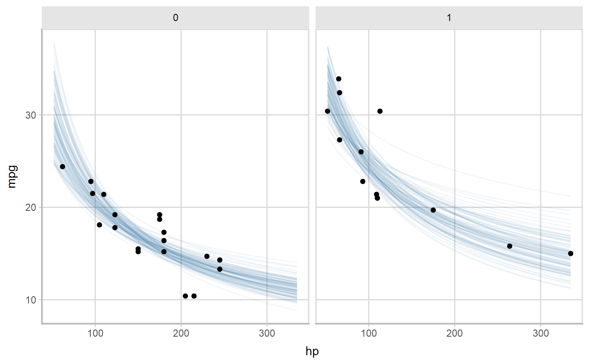
Animated hypothetical outcome plots (HOPs) can also be easily constructed by using gganimate:
set.seed(12345)
ndraws = 50
p = mtcars %>%
data_grid(hp = seq_range(hp, n = 50), am) %>%
add_fitted_draws(m_mpg_am, n = ndraws) %>%
ggplot(aes(x = hp, y = mpg)) +
geom_line(aes(y = .value, group = .draw), color = "#08519C") +
geom_point(data = mtcars) +
facet_wrap(~ am, labeller = label_both) +
transition_states(.draw, 0, 1) +
shadow_mark(past = TRUE, future = TRUE, alpha = 1/20, color = "gray50")
animate(p, nframes = ndraws, fps = 2.5, width = 700, height = 432, res = 100, type = "cairo")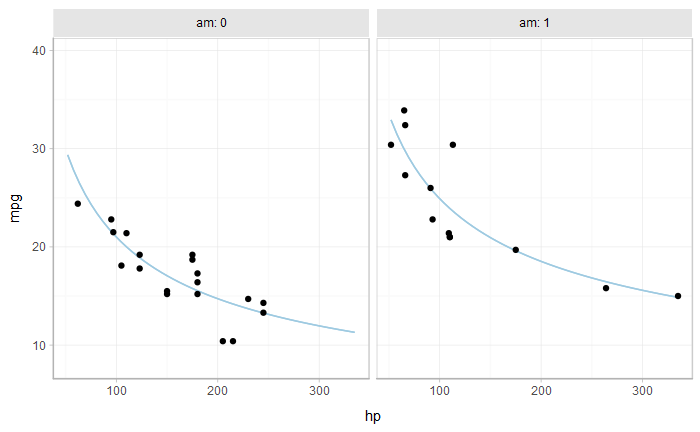
See vignette("tidybayes") for a variety of additional examples and more explanation of how it works.
Feedback, issues, and contributions
I welcome feedback, suggestions, issues, and contributions! Contact me at mjskay@umich.edu. If you have found a bug, please file it here with minimal code to reproduce the issue. Pull requests should be filed against the dev branch.
tidybayes grew out of helper functions I wrote to make my own analysis pipelines tidier. Over time it has expanded to cover more use cases I have encountered, but I would love to make it cover more!
Citing tidybayes
Matthew Kay (2019). tidybayes: Tidy Data and Geoms for Bayesian Models. R package version 1.1.0.9000, https://mjskay.github.io/tidybayes/. DOI: 10.5281/zenodo.1308151.